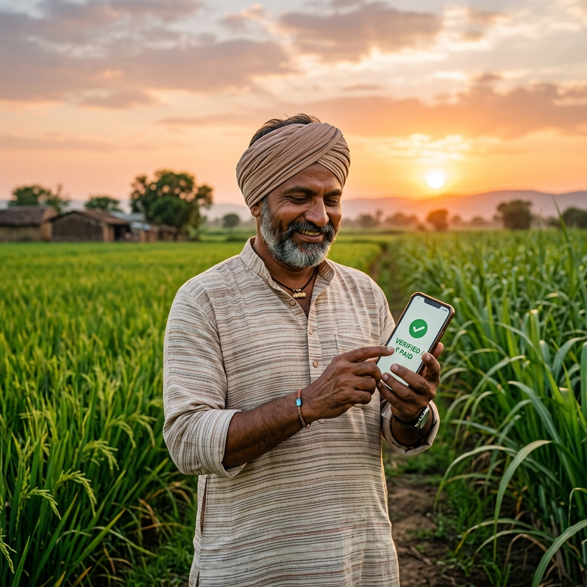

One of the most overlooked reasons why smart irrigation systems fail in real-world adoption is a lack of trust. Farmers don’t reject technology; they reject unpredictable behavior, a lack of explanation, and the loss of control over their livelihood.
Oriva is designed around trust-first adoption, not automation-first. We believe that the most powerful tool a farmer has is their own experience, and our technology should enhance that, not replace it.
Step 1: Advisory Before Automation
Instead of directly taking control of irrigation valves, Oriva starts as a recommendation system. We allow farmers to compare their traditional methods side-by-side with Oriva’s advice. This creates a visible proof loop:
- Farmers see the data.
- They compare it with their observations.
- Confidence builds gradually as they see the results in their crop health and water bills.
Step 2: Parallel Validation
Oriva uniquely supports running two irrigation approaches simultaneously in different zones. This "A/B testing" for farms is powerful because it removes blind trust and creates measurable validation. Most competitors focus on a "switch-over" model; we focus on a "transition" model.
Step 3: Explainable Decisions
Many smart systems act as black boxes—they simply say "Water now" or "Stop watering." Oriva instead focuses on why a decision was made. Our interface explains the factors influencing the recommendation, such as soil moisture trends or upcoming weather patterns.
This transparency is critical for reducing technology fear, especially in rural contexts where the cost of a failed crop is devastating.
The Human Psychology Advantage
From a behavioral standpoint, farmers trust systems that teach, not just control. Adoption increases when users feel empowered and in command of the data. Oriva aligns with this psychology by acting as a decision assistant rather than a robotic overlord.
Most companies optimize for: “How well does the system work?” Oriva optimizes for: “How easily will farmers trust and adopt it?” That difference is subtle—but it’s what makes Oriva a game-changer in the field.